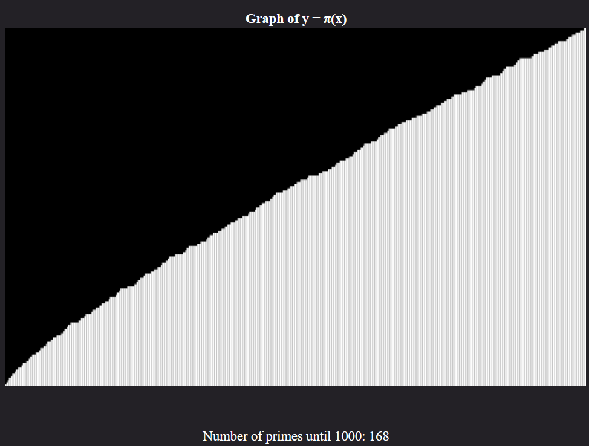

Developed by ChanRT | Fork me at GitHub
Mathematics
Trigonometric Functions

Does trigonometry still bring in the sweats? Or do you want to intuitively understand them? Whatever be the case, this interactive simulation provides a highly intuitive and visual understanding of all six Trigonometric functions, their properties and identities.
Collatz Conjecture

The statement of the Collatz Conjecture is simple enough to be universally understood. Yet its proof eludes the best of modern-day Mathematicians.
Mandelbrot Fractal

The Mandelbrot Fractal ought to erase any doubts about the beauty of Math. View a plethora of gorgeous, self-repeating patterns obtained from iterating a simple operation! Zoom in and explore the beauutiful sights. Learn how it comes about.
Hilbert Curve

Is it possible to traverse through entire space with a line that doesn't cross itself? Hilbert curve is a 2D space filling curve that does the job. Increase the order to see the curve progressively fill up the entire space.
Lorenz System

Ever come across the term "Butterfly Effect" in the context of chaos? It is generated by the Lorenz system of equations. Vary the parameters a little and see the trajectory change a lot! Come across the set of equations that generate these patterns.
Linear Transformations

Play around with the operation that is central to linear algebra. The coordinate system is your playground. Scale, rotate and skew! Encounter rotation matrices and inverses. See what a matrix with zero determinant does to the linear space.
Distribution of Primes

The distribution of prime numbers across intervals is a central problem in Number Theory, due to it's applications in Cryptography. Infact, the proof of Riemann's Hypothesis is important due to the light it can shed on prime distribution!
Conic Sections